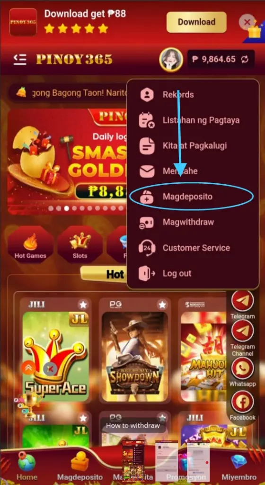
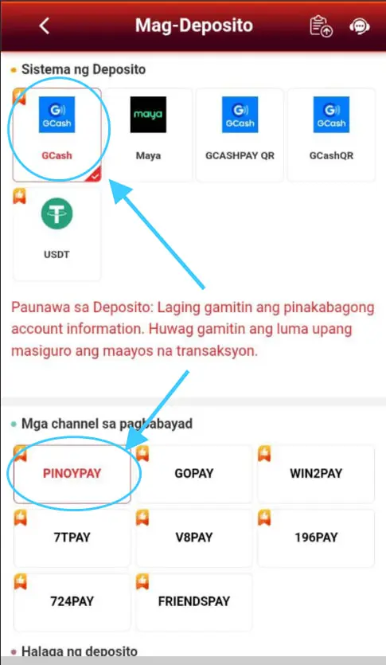
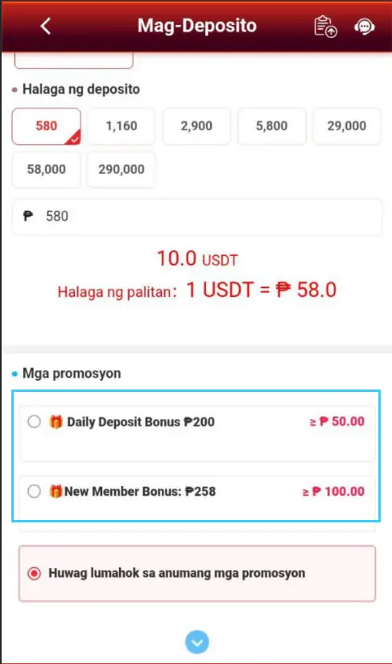
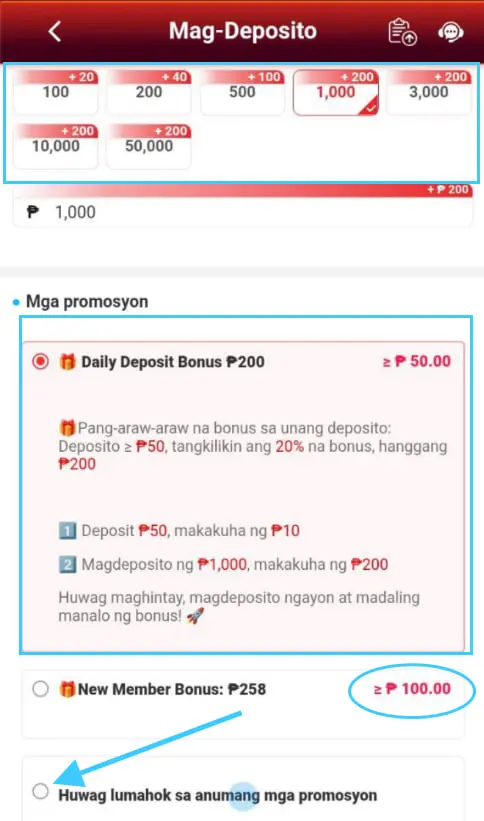
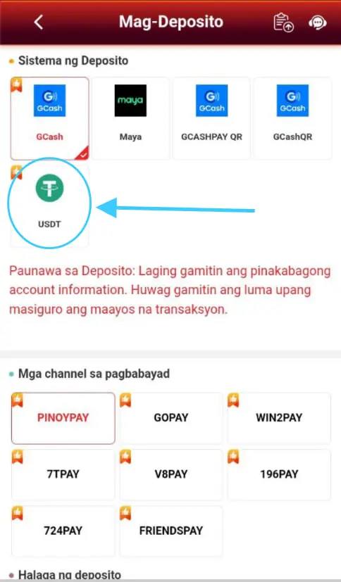

How to Deposit
Welcome to the official PINOY365 funding guide. To ensure a smooth gaming experience, we provide multiple secure channels for topping up your account. Whether you prefer the convenience of local e-wallets like GCash and Maya, or the global standard of USDT cryptocurrency, our system is designed for speed and absolute security.
Login to Your Account
The first step is to access your personal dashboard. Enter your registered username and password on the official PINOY365 login page. Always ensure that the URL is correct to protect your account from phishing attempts. Once logged in, you will have full access to the banking features.
Tip: Use a strong password and keep your login details private at all times.
Locate Deposit Icon
Navigate to the "Deposit" menu. If you are using our mobile application, you can find this button conveniently placed in the center or bottom navigation bar. On the desktop version, it is clearly visible in the top header section. This menu serves as the gateway to all your financial transactions.
Select Payment Category
We offer a wide range of payment solutions. You can choose E-Wallet for local Philippine transfers, Bank Transfer for larger amounts, or USDT for decentralized and fast crypto payments. Each category is optimized for 24/7 availability to suit your playing schedule.
GCash, Maya, or Bank Transfer
For local e-wallets, simply enter the amount you wish to deposit (starting from as low as ₱100). Our system will generate a unique recipient number or QR code. Copy the details carefully and complete the transfer in your GCash or Maya app. Always double-check the amount before sending.
Important:
Recipient numbers change periodically for security. Always get a fresh number from the dashboard before making a new deposit.
USDT Crypto (TRC20) Guide
To deposit using USDT, ensure you are using the TRC20 network. Scan the provided QR code or copy the wallet address. Crypto deposits are highly recommended for those who value privacy and high transaction limits. Your funds will be converted and credited to your balance once confirmed on the blockchain.
Check Confirmation & History
After the transfer is completed, please allow a few moments for our system to verify the transaction. You can monitor the progress in your "Transaction History". Once the status shows "Success", your credits will be updated instantly, and you can begin playing your favorite games.
Advanced Deposit FAQ
What if my deposit is delayed?
If your credits don't appear within 10 minutes, please save your transaction receipt or screenshot and contact our 24/7 Live Support immediately. We will manually verify and credit your account.
Are there any deposit fees?
PINOY365 does not charge any fees for deposits. However, please be aware that e-wallet providers or banks may have their own standard transaction fees depending on your account type.
Maximum Deposit Limits
While the minimum is ₱100, the maximum limit varies by method. VIP players enjoy significantly higher deposit and withdrawal ceilings. Contact support to learn about our VIP tiers.
Security Best Practices
Always perform transactions yourself. PINOY365 will never ask you to send money to a personal GCash number via Telegram or Facebook chat. Only use the numbers provided inside the official dashboard.